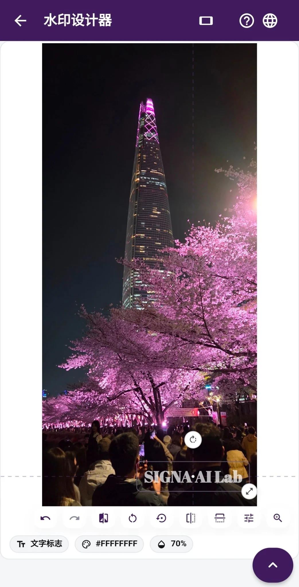

01 · 水印
水印放哪里，自己定
给照片加上名字或标志，大小、位置和透明度都可以调。文字水印还能换颜色和字体。每张图都能单独摆放水印，常用的样式可以保存。基础功能免费，Pro 提供额外字体。想同时加上不可见的 SIGNA 信号，打开对应选项即可。
横图竖图都能编辑 · 一次最多 12 张 · 每张单独定位 · 保存设计 · Pro 额外字体
怎么给照片挑水印 →客户发来的照片、还没公开的作品，都能在手机上直接加水印、查图片信息。处理照片不用把文件传出去。
给作品署上自己的名字。想了解别人发来的图片，也可以打开文件看看留下了哪些信息。
可见水印和不可见的 SIGNA 信号，可以二选一，也可以一起加。
用你平时用的聊天软件发送，或者发到社交平台。
用 SIGNA Inspect 查看图片。开通 Pro 后，可以把结果存为报告或导出。

给照片加上名字或标志，大小、位置和透明度都可以调。文字水印还能换颜色和字体。每张图都能单独摆放水印，常用的样式可以保存。基础功能免费，Pro 提供额外字体。想同时加上不可见的 SIGNA 信号，打开对应选项即可。
不想在图上加字或标志，可以只加不可见的 SIGNA 信号。自己留存选 Original，要发给别人选 SNS。之后用 SIGNA Inspect 打开图片，可以查找信号。本机有匹配的添加记录时，也会显示。
用 SIGNA Inspect 可以查找 SIGNA 信号，查看文件信息、EXIF 和图片状态。手机里有匹配的信号添加记录，也能一起看到。
JPEG 文件带有 Content Credentials（C2PA）时，可以分别查看签名是否通过验证，以及信任列表能否确认签名方。记录中注明的制作工具和制作方式也能查看，签名时间通过验证后才会显示。
怎么看 C2PA 验证结果 →先给照片做个水印，再用 SIGNA Inspect 打开图片，看看文件里有哪些信息。
用 Pro Evidence Report 把查到的信息汇总起来。报告可以存到手机里随时翻看，也能导出成文件。
JPG 或 PNG 格式的报价单、确认单也可以加上不可见的 SIGNA 信号。文字和印章照样看得清，之后还能在 SIGNA Inspect 里查找信号。
打开手机里存好的照片，就能加水印、查 SIGNA 信号或分析图片。不用等照片上传，操作也不会被广告打断。
给照片加上名字或标志，试试哪种水印最适合你的作品。